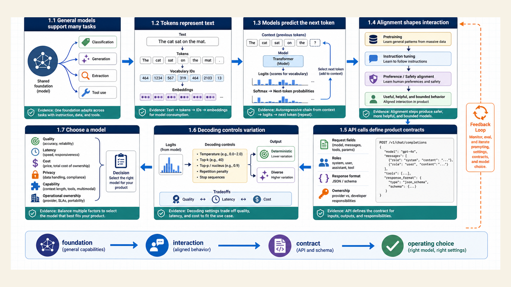
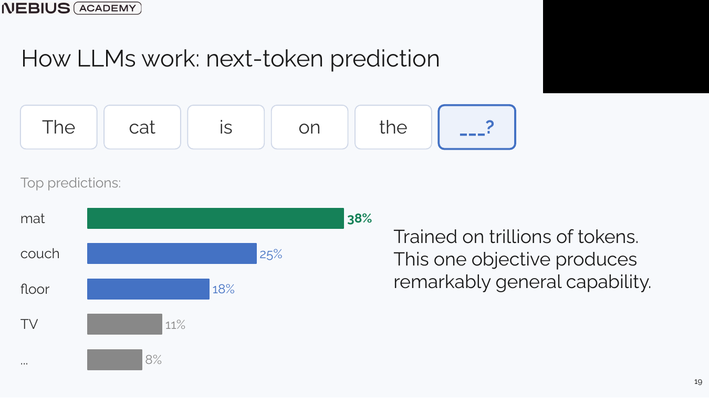
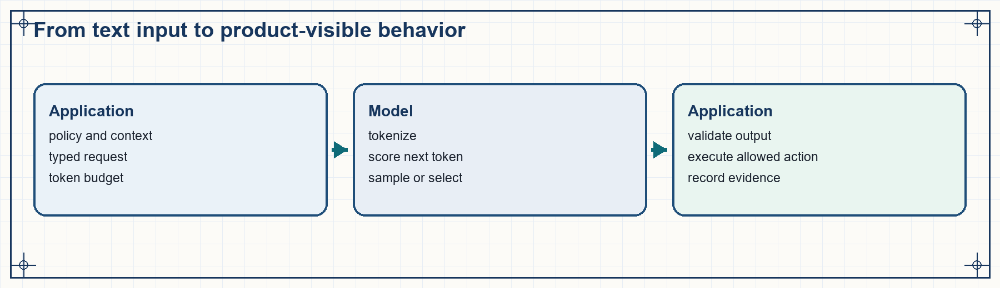
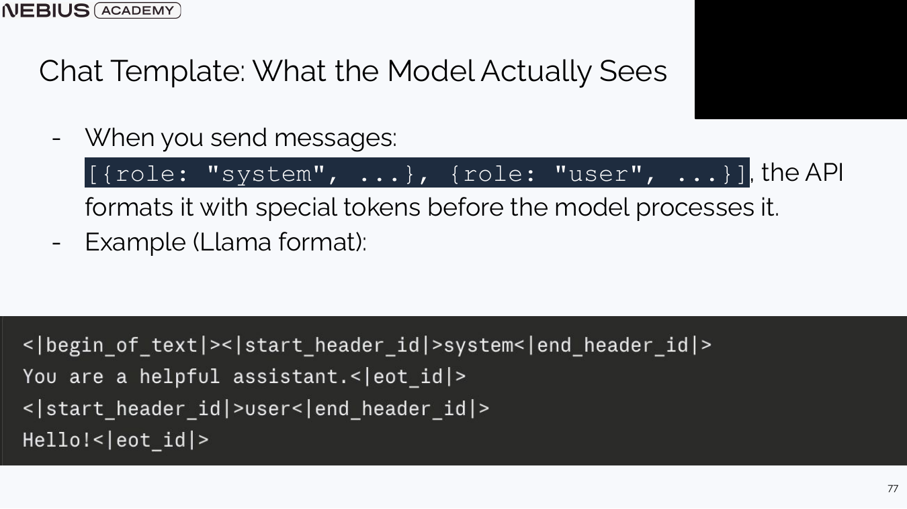
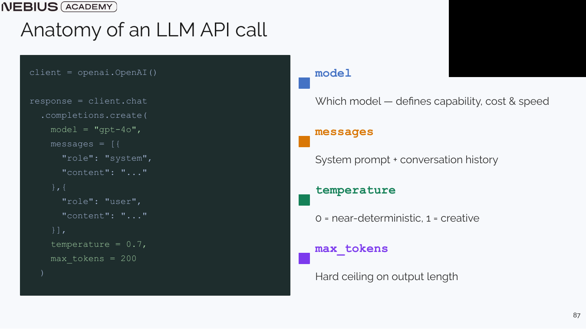
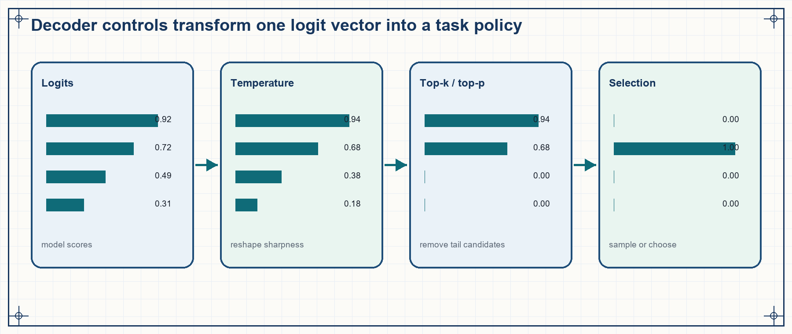
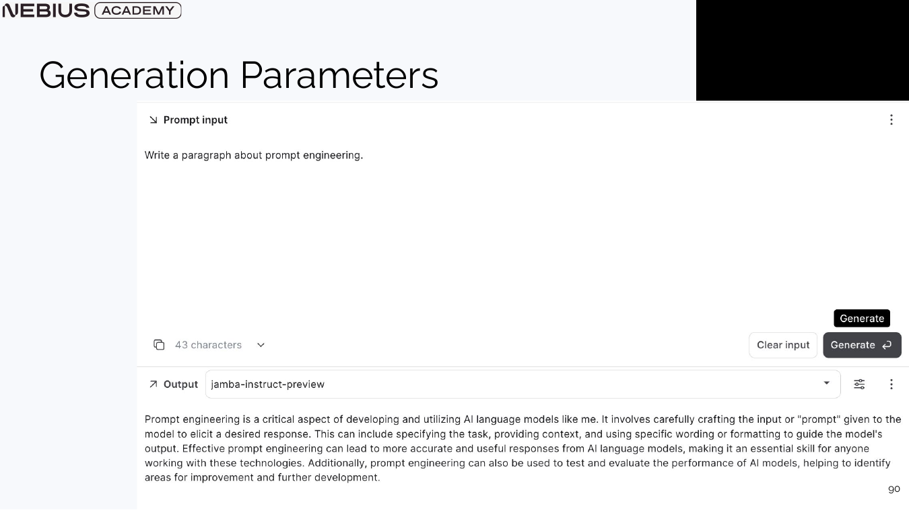

1 Language models as application components
An application does more than call a model. It puts information into the request, checks the answer, and decides whether the answer may trigger an action. Start by separating the model’s job from the application’s job. The model predicts the next token. Training changes the kinds of answers it tends to produce. Application code prepares the input and decides how to use the output. This chapter follows that path step by step: text becomes tokens, the model scores possible next tokens, alignment and chat formatting shape the reply, decoding picks a reply, and the application checks it.

Read the visual as a request path: the model predicts a continuation, while application code prepares the input, checks the response, and controls any external action.
1.1 General language models can perform different text tasks
A model does not understand a new task simply because we give the task a name. It produces patterns that its training and the current request make likely. Older language systems were usually built for one narrow job. A new job meant new training data and another training run. Large language models made one useful change: the same model can try many jobs when the request explains the job and shows examples. We still need to test whether it works for our particular inputs.
Earlier systems were usually built for one job. For example, one system could label a review as positive or negative, while another could pull names from a document. Each system needed its own training data. A transformer is a neural-network design that can process relationships among many tokens in one request. Transformers made it practical to train one much larger model on broad text. GPT-3, released in 2020, showed the practical result: one pre-trained model could often try a new job when the request included an instruction and a few examples.
A foundation model is trained on broad data before it is used for a particular product. A large language model (LLM) is a foundation model that reads and writes text tokens. The same LLM may classify, extract, summarize, translate, or generate code. It cannot, by itself, fetch current facts, remember earlier calls, decide whether a user has permission, or verify an important answer. Application code must do those jobs.
In-context learning: Changing what the model does by putting instructions or examples in this request. The model’s stored weights stay the same.
Parameter: A number learned during training and stored in the model. It remains unchanged until the application loads another saved model version, called a checkpoint.
Product consequence
One general model can replace several early prototypes. The application still has to define the task, validate the output, and measure the user-facing result.
One impressive demonstration is only a starting point. Test the intended inputs repeatedly before saying the application can do the job reliably.
A narrow classifier is trained for one fixed input type and one fixed set of labels. A language model instead receives a token sequence, so an instruction and examples can describe a new task without loading a new checkpoint. This makes prototypes cheaper to build. It does not guarantee success: results can still change with the prompt, model version, decoding settings, and kinds of input.
A capability claim applies only to the conditions under which it was tested. A model that extracts names from short catalogue entries may fail on multilingual descriptions, long documents, or ambiguous entities. Write down the tested cases, prompt, checkpoint, decoding settings, output schema, latency, and cost together. Another engineer can then repeat the comparison and see what changed. To do that well, we first need to know the unit the model actually receives: tokens.
1.2 Tokens as model input
The text you type is not the form the model uses internally. The model does not receive a neat list of words or individual characters. Before inference, a tokenizer splits the request into pieces and gives each piece an identifying number. These pieces are tokens. Their count affects the cost of a request, the amount of text that fits, and common failures with code, spelling, and non-English text.
A tokenizer maps text to a sequence of token identifiers. Modern LLMs commonly use subword tokens: a common string may receive one token, while a rare word, punctuation, code, or non-English text may split into several. The same visible text can therefore produce different counts for different models.
The token number is only an identifier. An embedding table turns it into a learned vector: a row of numbers the transformer can process. The transformer also receives position information, so it sees numeric representations of token pieces in an order, not a clean list of dictionary words. This is why exact character counts, spelling, and unusual separators can behave unexpectedly when the relevant characters sit inside a larger token.
Vocabulary: The finite set of token identifiers a tokenizer and model share. Its entries may represent complete words, word fragments, punctuation, bytes, or other subword units.
Embedding: A learned vector representation associated with a token or another discrete object. Similarity in embedding space is useful but does not guarantee identical meaning or factual equivalence.
Count the request the model will actually receive
To estimate cost or avoid a context-window limit, first build the complete request. Include the chat-role markers, system message, history, retrieved text, tool descriptions, and room for the answer. Then run that exact request through the selected model’s tokenizer.
A word count is only a rough guess. It can be badly wrong for code, URLs, Hebrew, Chinese, unusual whitespace, or a different provider’s tokenizer. Both the context limit and the provider’s bill use tokens, so the budget must use the same unit.
Providers often charge one rate for input tokens and another for generated tokens. Count them separately before adding the two charges.
\[ C=r_{in}N_{in}+r_{out}N_{out} \tag{1.1}\]
\(N_{\mathrm{in}}\) and \(N_{\mathrm{out}}\) are the measured input and output token counts. \(r_{\mathrm{in}}\) and \(r_{\mathrm{out}}\) are the current rates for the chosen provider and model. Multiply each count by its own rate, then add the two charges. Discounts, batch pricing, tool calls, evaluation calls, and infrastructure add further costs to the full workflow.
Worked calculation - token pricing at product scale
Assume one turn uses 1,800 input tokens and 300 output tokens. Input costs $0.20 per million tokens and output costs $0.80 per million tokens.
- Input cost per turn is 1,800 / 1,000,000 x $0.20 = $0.00036.
- Output cost per turn is 300 / 1,000,000 x $0.80 = $0.00024.
- Total cost per turn is $0.00060; one million turns cost about $600 before retries, retrieval, or tool calls.
Result: Output is only one sixth of the tokens but contributes 40 percent of this example’s token bill.
Interpretation: Small per-turn numbers become material at product traffic. Measure the complete workflow because agent retries and judge calls multiply the model-call count.
Token counting tells us how much of a request fits and what it costs. It does not yet explain how those token pieces become an answer. The next section follows one generation step.
1.3 Generating an answer one token at a time
After tokenization, the model receives a sequence of token numbers. It must now turn the tokens already present into an answer. The existing tokens are called the prefix. The model scores possible next tokens one at a time. The decoder picks one, adds it to the prefix, and repeats until generation stops.
At each generation step, the model looks at the current prefix. It computes one score for every token it could write next. This score is a logit. Softmax turns the scores into probabilities. A decoder picks or samples one token, adds it to the prefix, and starts the next step. Generation stops at an end token, a stop sequence, or an application limit.
The probability assigned to a complete token sequence is the product of the conditional probabilities assigned at each position.
\[ P(x_{1:T}) = \prod_{t=1}^{T} P(x_t \mid x_{<t}) \tag{1.2}\]
The sequence in the formula is the complete generated answer. Each term is the probability of one token after the tokens before it. Multiplying the terms gives the model’s score for the whole sequence. That score measures what the model expects to write, not whether the answer is true or useful.
Worked calculation - probability of a three-token continuation
Suppose the model assigns probabilities 0.50, 0.40, and 0.25 to the selected tokens at three successive positions.
- Multiply the first two conditional probabilities: 0.50 x 0.40 = 0.20.
- Include the third conditional probability: 0.20 x 0.25 = 0.05.
Result: The complete three-token continuation has probability 0.05 under this model and prefix.
Interpretation: A fluent sequence can still have small total probability because every additional token contributes another factor. Sequence probability is a model score, not an external truth score.
The distribution below makes the local step visible. The bars represent possible next tokens, not facts stored in a database.

Once a token is selected, it becomes part of the next prefix. This feedback makes early choices affect every later probability.

The same model can sit inside a safe extractor or an unsafe action loop. The difference is in the application code that supplies evidence, checks the response, and controls external actions.
This repeated prediction loop can produce fluent text. It does not, on its own, make the text a useful response to a user. Training and message formatting supply that next layer.
1.4 Model alignment
So far, the model has learned to continue text. It has not necessarily learned how a helpful assistant should answer. A raw base model may continue a user message, but it may ignore the instruction or mix up system, user, and assistant roles. Alignment training teaches the model which replies people prefer. A chat template then marks the roles in the token sequence sent to the model.
A base model learns to continue broad training text. Supervised Fine-Tuning (SFT) then gives it examples of prompts and useful responses, making instruction following more likely. Preference-based alignment adds a different kind of evidence: people or evaluators compare two possible replies and mark which one they prefer. Reinforcement Learning from Human Feedback (RLHF) usually trains a separate reward model from those comparisons, then uses that reward model to improve the main model. Direct Preference Optimization (DPO) instead learns directly from preferred and rejected replies, without first training a separate reward model.
Alignment changes which replies the checkpoint is more likely to produce. It may make the model follow instructions better or avoid unsafe replies. It can also lower some benchmark scores. Test the aligned model on the real task, its likely failures, and its safety requirements instead of expecting every score to improve.
Base model: A pre-trained language model that primarily continues text. Alignment training teaches it to follow instructions and conversational roles.
Instruct model: A base model further trained to respond to instructions, usually through demonstrations and preference-based alignment.
Chat model: An instruction-following model used with a role-aware serialization that distinguishes system, user, assistant, and sometimes tool messages.
A chat API accepts message objects, but the model receives tokens. A chat template converts each role and message boundary into the special tokens or text markers used during training.

A wrong template can blur role boundaries even when the application-side message objects look correct. The model then receives a different sequence from the one the application intended.
The application carries conversation state
A chat model does not retain a previous call by itself. On the next turn, the application must resend selected history or retrieve a stored summary, episode, or fact.
The application now has messages and a chat template, but it still needs a defined interface for sending them to a provider and reading the response. That interface is an API.
1.5 Request, response, and validation cycle
An Application Programming Interface (API) is the interface application code uses to send a request to a model provider and read the response. For each request, the application chooses a checkpoint, sends messages, sets decoding controls, limits the output, and chooses how to access the model. These settings do different jobs. The model field selects a capability. Messages supply information. Decoding chooses among candidate tokens. Validation checks the returned structure.
The model field selects a checkpoint and thereby affects its tokenizer, context limit, price, latency, and provider-specific behaviour. The messages or input field supplies policy, user data, history, and evidence. Decoding fields control token selection. Output-schema settings let the provider or the application check that the returned data has the required shape.

Each field changes a different part of the run. Changing the model affects capability and cost; changing messages changes the evidence; temperature changes selection from the same logits; and a small output limit can cut off an otherwise valid answer.
| Field or layer | Component that sets or checks it | Changes | What it cannot guarantee |
|---|---|---|---|
| Model checkpoint | Provider or self-hosted runtime | Capability, tokenizer, latency, cost, context capacity | Task success on the product distribution |
| Messages and context | Application | Instructions, evidence, state, examples, available tools | That the model will use every supplied fact correctly |
| Decoding controls | Inference API or runtime | How probabilities become selected tokens | Factuality, safety, or deterministic semantics |
| Schema and validator | API plus application | Output syntax and accepted fields | That field values are supported by evidence |
The way an application accesses a model also changes the work needed to operate it. A direct proprietary API reduces serving work, but it sends data to a vendor and creates rate-limit, pricing, and version dependencies. A managed platform adds catalogue and deployment controls. Self-hosting open weights can improve privacy and customization, but the team must plan capacity, upgrade the service, secure it, and keep it reliable.
Compare access paths with the same task cases
Use the same evaluation cases and output requirements when comparing a direct provider API, a managed platform, and self-hosted model weights. Compare answer quality, latency, data location, work needed to run the service, and total cost.
Open weights can improve privacy and customization, but they do not remove license conditions, security work, hardware cost, or model-quality gaps. A low token price can still cost more once capacity planning and reliability work are included.
An OpenAI-compatible client can send requests to a Nebius-hosted endpoint. Record the provider configuration, model identifier, token counts, and latency with the result. The endpoint and model below are dated examples; check current provider documentation before using them in production.
Code example 1.1 - a Nebius-compatible call records token usage and elapsed time.
Code example: Code example 1.1 - a Nebius-compatible call records token usage and elapsed time.
from openai import OpenAI
import os
import time
client = OpenAI(
base_url="https://api.studio.nebius.ai/v1/",
api_key=os.environ["NEBIUS_API_KEY"],
)
started = time.perf_counter()
response = client.chat.completions.create(
model=model_id,
messages=[
{"role": "system", "content": system_instructions},
{"role": "user", "content": user_request},
],
temperature=0.2,
max_tokens=300,
)
record = {
"provider": "Nebius AI Studio",
"base_url": str(client.base_url),
"model": model_id,
"text": response.choices[0].message.content,
"input_tokens": response.usage.prompt_tokens,
"output_tokens": response.usage.completion_tokens,
"latency_ms": 1000 * (time.perf_counter() - started),
}Record model_id, endpoint configuration, prompt versions, and returned usage with each evaluation run. Before a build or release decision, check current official documentation for prices, model availability, usage-field meanings, retention behaviour, and rate limits.
The example sets temperature=0.2. That is not a quality setting by itself; it changes how the system chooses from the model’s possible next tokens. The next section makes that choice explicit.
1.6 Token generation parameters
Inside inference, the model computes a logit for every possible next token. A logit is an internal score, not a word shown to the user. Most chat APIs return the selected text, not these scores. The decoder uses these scores to choose one next token. That choice explains why identical requests can sometimes produce different outputs. Temperature changes how spread out the probabilities are. Top-k and top-p remove some candidate tokens. The final selection rule decides whether the run always picks the top candidate or samples from several candidates.
Temperature divides logits before softmax. A smaller positive temperature makes the highest-scoring tokens more likely; a larger temperature spreads probability more widely. At temperature zero, runtimes normally use greedy or near-greedy selection rather than dividing by zero.
\[ p_i = \frac{\exp(z_i / \tau)}{\sum_{j=1}^{V} \exp(z_j / \tau)} \tag{1.3}\]
\(z_i\) is the logit for vocabulary item \(i\); \(\tau\) is the positive temperature; \(V\) is vocabulary size; and \(p_i\) is the resulting probability. Exponentiation turns score differences into positive ratios, and the denominator makes the probabilities sum to one. Temperature changes how much the decoder explores; it does not add missing evidence or make claims true.
Worked calculation - temperature changes a two-token choice
Use logits 2 and 1 for two candidate tokens.
- At temperature 1, exponentials are approximately 7.39 and 2.72, so the first token receives probability 7.39 / 10.11 = 0.73.
- At temperature 0.5, the scaled logits are 4 and 2. Exponentials are approximately 54.60 and 7.39, so the first token receives probability 0.88.
Result: Lower temperature increases concentration on the already higher-scored token.
Interpretation: Extraction and routing often benefit from low variation, while ideation may benefit from sampling. Choose the setting from evaluation results on the task, not from a general preference for creativity or determinism.
Top-k keeps the k highest-probability tokens before sampling. Top-p keeps the smallest set whose cumulative probability reaches a threshold. Both remove low-probability candidates, but their effective set size changes differently as the distribution becomes sharper or flatter.

Temperature and truncation change the set of likely candidates; the final selection rule chooses what the user receives. Evaluate these controls on representative task cases. One plausible sample is not enough evidence.

A deterministic-looking UI can still contain model, retrieval, or tool nondeterminism. Repeated trials remain necessary whenever the end-to-end system can vary.
Decoding settings shape one request. The model itself, its access path, and its limits are larger choices that affect the whole application. We can choose them only from evidence on the intended work.
1.7 Evidence for model selection
Model type, access path, context capacity, and decoding settings affect different parts of the system. A leaderboard score cannot tell a team whether one model fits its task, budget, data rules, and failure costs. Choose a default and fallback by comparing checkpoints on representative tasks under the actual operating constraints.
Start with the behaviour that matters: extraction accuracy, answers supported by supplied evidence, code execution, latency, cost, privacy, or safety. Build a small representative evaluation before heavily tuning a prompt for one model. Test more than one checkpoint. A stronger model may need less prompting, while a smaller model may be cheaper once the prompt and output are constrained.
- Capability fit: Does the model solve the intended task and important slices?
- Operational fit: Do latency, throughput, context capacity, rate limits, and reliability meet the service requirement?
- Data and legal fit: Are privacy, retention, data residency, model updates, and licensing acceptable?
- Economic fit: What is total workflow cost after retries, tool calls, retrieval, judge-model calls, and human review?
- Reversibility: Can the application switch checkpoints without rewriting state, prompts, schemas, and evals?
A model call predicts tokens from a supplied prefix. Application code builds that prefix, sets token-generation parameters, checks the result, and controls every external action. Chapter 2 starts from that boundary: it turns a task requirement into a prompt, examples, and an output shape the application can check repeatedly.
Bring the checklist together in three groups. Capability asks whether the model does the required work. Operational fit asks whether it meets the latency, throughput, context, tool-support, deployment, and cost limits. Data and legal fit asks whether data handling, licensing, version changes, and result reproducibility are acceptable.
A selection study keeps the task set and output specification fixed while it compares checkpoints under realistic request settings. Inspect error slices to learn whether a larger model reduces the need for prompt scaffolding. Also test whether retrieval or constrained decoding makes a smaller model adequate. Finally, compare the quality gain with the added latency and cost. The right answer depends on the application because an unsupported answer, a slow response, and a false tool action have different costs in different products.